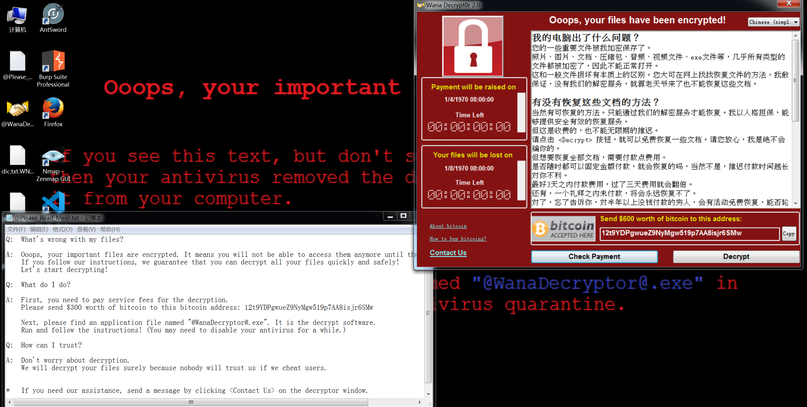

# 勒索病毒样本实验
# 什么是勒索病毒
勒索病毒是一种特殊的恶意软件，又被人归类为 “阻断访问式攻击”（denial-of-access attack），其与其他病毒最大的不同在于手法以及中毒方式。其中一种勒索软件仅是单纯地将受害者的电脑锁起来，而另一种则系统性地加密受害者硬盘上的文件。所有的勒索软件都会要求受害者缴纳赎金以取回对电脑的控制权，或是取回受害者根本无从自行获取的解密密钥以便解密档案。勒索软件通常透过木马病毒的形式传播，将自身为掩盖为看似无害的文件，通常会通过假冒成普通的电子邮件等社交工程方法欺骗受害者点击链接下载。
# 如果中了勒索病毒怎么办？
-
先要清楚是哪个族的勒索病毒，不同族的勒索病毒在加密文件后会有不同的扩展名，可以在一些平台检测出是哪一族的勒索病毒。
https://habo.qq.com/ 腾讯哈勃
https://lesuobingdu.360.cn/ 360 勒索病毒解密
https://lesuobingdu.qianxin.com/ 奇安信勒索病毒搜索引擎
-
根据分析平台提供的解密程序进行文件解密，解密完重要文件以后，将重要文件备份好再重装系统
-
有的加密是解不出来的，只能求助大佬或者重装系统了
# WannaCry 勒索病毒
WannaCry 是一种利用 NSA 的 “永恒之蓝”（EternalBlue）(ms17-010)。漏洞利用程序透过互联网对全球运行 Microsoft Windows 操作系统的计算机进行攻击的加密型勒索软件兼蠕虫病毒（Encrypting Ransomware Worm）。该病毒利用 AES-128 和 RSA 算法恶意加密用户文件以勒索比特币，使用 Tor 进行通讯，为 WanaCrypt0r 1.0 的变种。

dic.txt 被加密成 dic.txt.WNCRY
可以在奇安信病毒搜索引擎搜索 WNCRY 后缀，可以下载解密程序试试
试了几个解密程序都解不出来....
这种加密是不可逆的，网上的一些解密文章其实也是从病毒设计的一些漏洞作为切入点去解密的，安全之路道阻且长啊，要学的东西还有很多，本菜鸟仍需继续努力。
有一些勒索病毒是可以解开的，像 Satan，他毒性就比较弱，可以解开：https://it.rising.com.cn/dongtai/19385.html
所以对于这种勒索病毒，一定是要做好预防工作，对于一些钓鱼文件和恶意软件都要谨慎一点，而且一定要做好重要文件备份。
这里也体现出像 EDR、SIEM、SOAR、XDR 的重要性，他们共同协助，构成网络安全的坚实防线。
- EDR：专注于终端层面的威胁检测与响应
- SIEM：提供全局的安全信息和事件管理
- SOAR：通过自动化提高响应效率
- XDR：整合所有力量，提供跨平台的全面安全防护